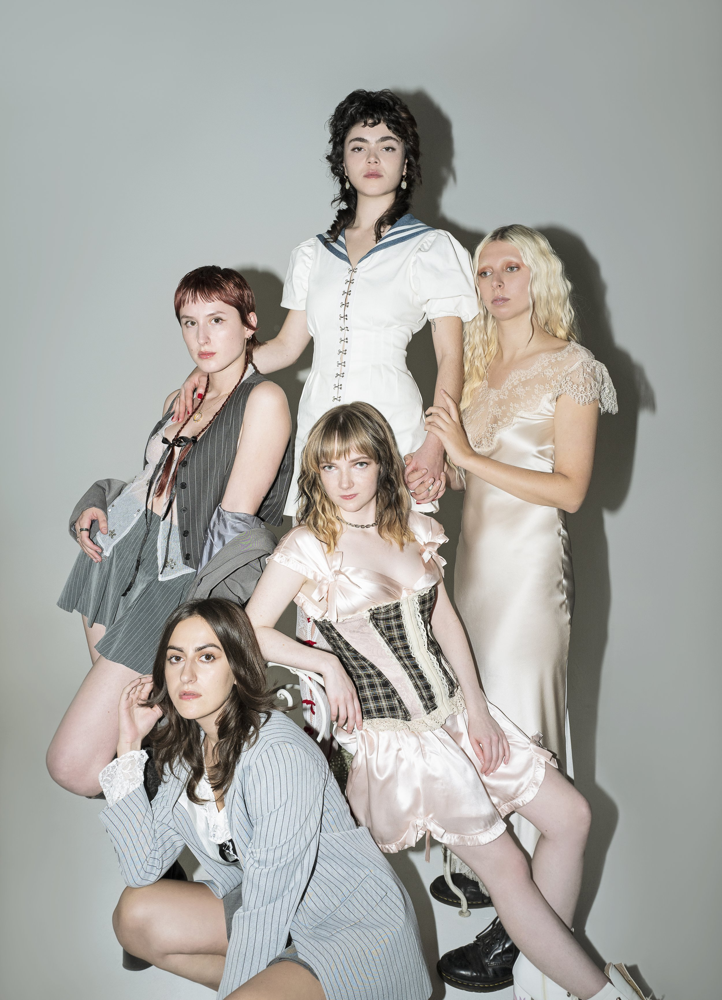

The Last Dinner Party and Others
Chappell Roan, with her distinct vocals and vulnerable songwriting, crafts songs that resonate deeply with listeners. Her music touches on themes of self-discovery and empowerment, making her an artist to watch in the indie pop scene. Each track feels like an intimate conversation with the listener, offering a window into personal moments of growth and reflection. From her emotive melodies to her candid lyrics, Roan's ability to evoke raw emotion is a testament to her artistic authenticity.
Lana Del Rey, on the other hand, has always been a master of storytelling. Her melancholic sound, combined with cinematic production, explores the darker sides of love, fame, and the passage of time. Del Rey's ability to weave together tales of heartbreak and longing with nostalgic and often dreamy instrumentals sets her apart as a visionary in alternative pop. Whether reflecting on the pain of lost love or the complexities of life in the public eye, she brings a unique voice to modern music .Lastly, Mitski’s music carries a raw emotional weight, touching on themes of identity, loneliness, and desire. Her distinct sound and introspective lyrics continue to resonate with fans across genres, solidifying her place as one of the most influential voices in modern music.